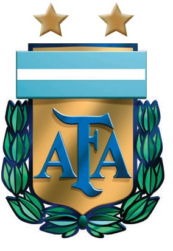

por Pedro Henrique B. N. Prado

O torcedor otimista imaginou a Argentina brilhando sob comando do maior dos ídolos, Diego Maradona. O pessimista viu o anúncio de “El Diez” como técnico da seleção com ressalvas, mas certamente não esperava tamanho sufoco e tanta confusão. Jogadores contestados e de qualidade duvidosa com a camisa alviceleste, quase 90 jogadores utilizados em pouco mais de um ano, destaques sequer convocados... São muitos os motivos que explicam a imensa desconfiança sobre os hermanos.
Dentro de campo, os resultados foram desastrosos. A começar pela goleada imposta pela Bolívia, em La Paz, por 6 a 1, a maior da história argentina. Derrotas como para o Brasil, no Gigante de Arroyito, ajudaram a deixar a Argentina somente com 28 pontos na classificação final das eliminatórias, 15 a menos do que para o Mundial de 2002.
A geração, no entanto, não aparenta passar por problemas técnicos, apesar de Messi não jogar o futebol que o fez famoso no Barcelona. O ataque conta com as mais opções variadas, como Higuaín, Tevez, Agüero e Diego Milito. No meio-campo, Mascherano, Gago, Cambiasso, Verón, Maxi Rodríguez e até mesmo Riquelme, que seria a estrela da companhia se não tivesse desavenças com Maradona. Material de qualidade que pode ser melhor aproveitado até junho.